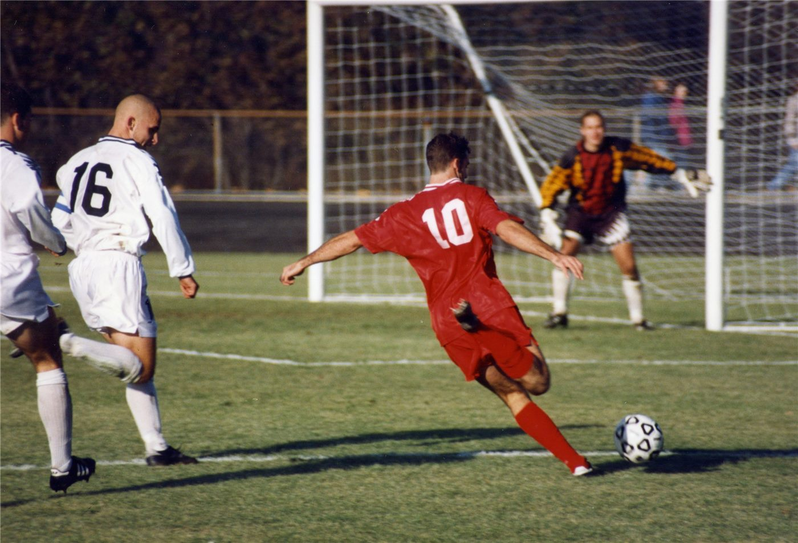

"습관성 발목 삠, 근육 탓만은 아니다"… 발바닥 감각 되살리는 운동
발목을 자주 접질리는 사람에게 근력 부족만이 원인은 아니라는 지적이 나온다. 발바닥의 감각 기능 회복이 함께 필요하다는 설명이다.
양념자 기자 · 2026.09.03
橋사회

발목을 반복해서 접질리는 이른바 습관성 발목 염좌를 두고, 근력 부족만으로 설명하기 어렵다는 지적이 재활 분야에서 제기돼 왔다. 발바닥과 발목의 감각 기능 저하가 함께 작용한다는 것이다.
광고 문의 · 300×250발목 관절에는 위치와 움직임을 감지하는 감각 수용기가 분포한다. 한 번 심하게 접질리면 인대뿐 아니라 이 수용기도 손상되고, 회복 과정에서 감각 신호가 이전만큼 정확하게 전달되지 않는 경우가 있다.
그 결과 발이 지면에 닿는 순간의 각도 조절이 늦어진다. 근력이 충분해도 반응 시점이 밀리면 접질림으로 이어질 수 있다는 것이 이 설명의 요지다.
재활 분야에서 흔히 권장되는 것은 균형 훈련이다. 한 발로 서기, 눈을 감고 균형 잡기, 불안정한 표면에서 서기 등이 감각과 반응 속도를 함께 훈련하는 방법으로 소개된다.
다만 통증이나 부기가 남아 있는 상태에서는 운동을 시작하기 전에 진료를 받는 것이 우선이다. 인대 손상 정도에 따라 필요한 처치가 달라지기 때문이다.
이 기사는 일반적인 건강 정보를 정리한 것으로 진단이나 치료를 대신하지 않는다. 증상이 반복되거나 심해질 경우 정형외과나 재활의학과 진료를 받는 것이 필요하다.
출처·참고 (사실 확인용 — 본문은 직접 재작성)
· https://www.chosun.com/
· https://www.chosun.com/